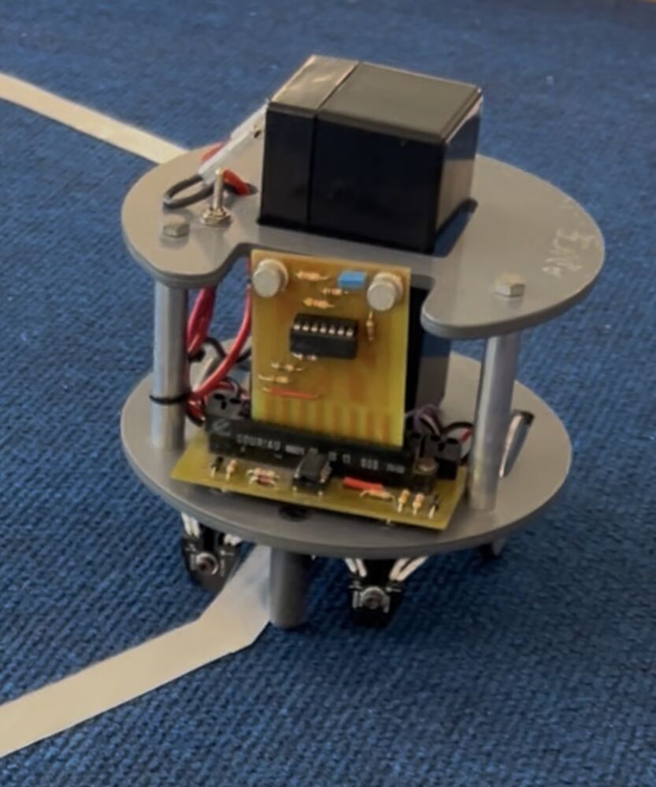
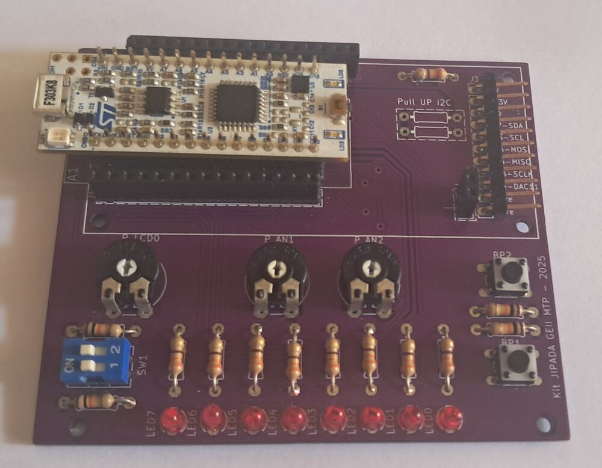
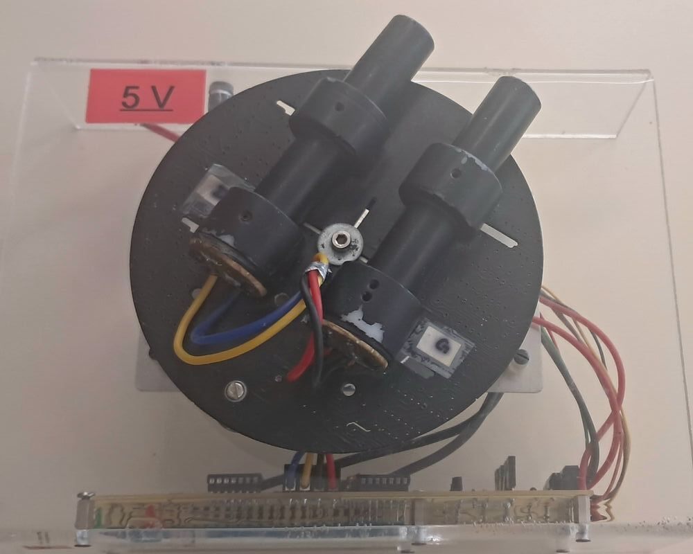
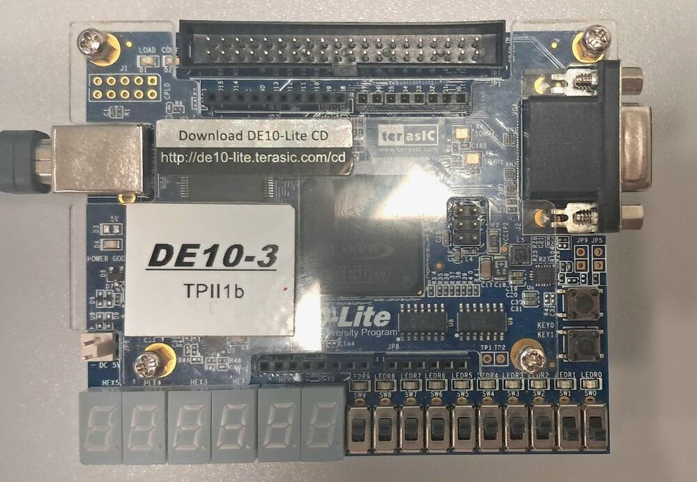
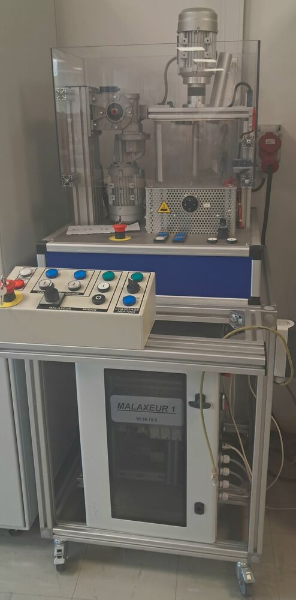
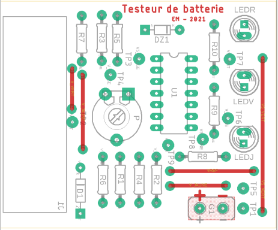
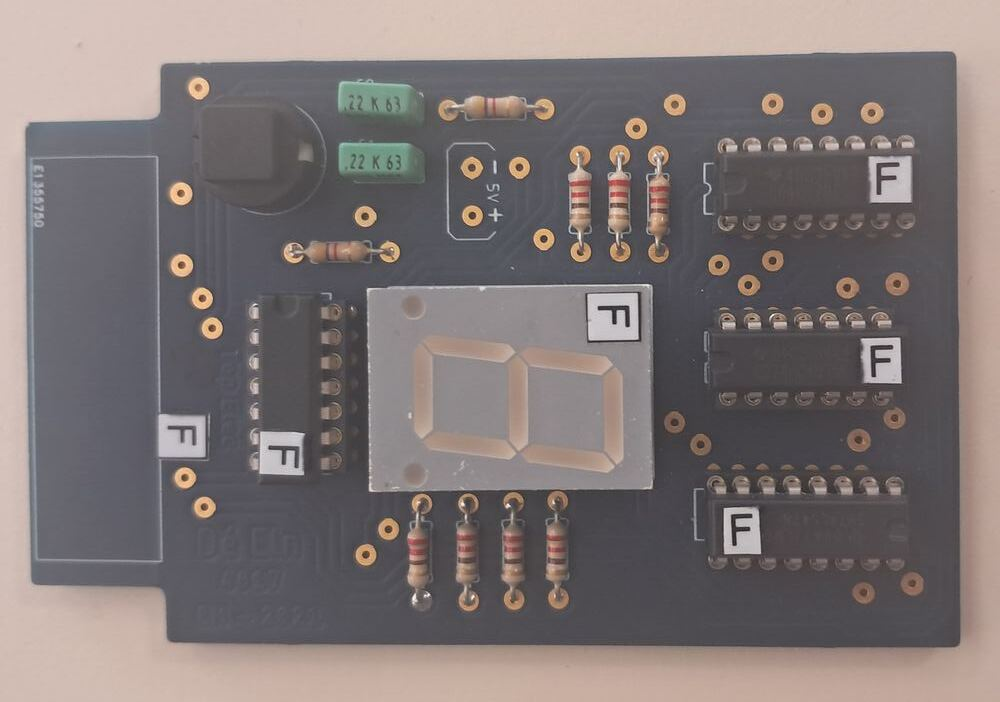
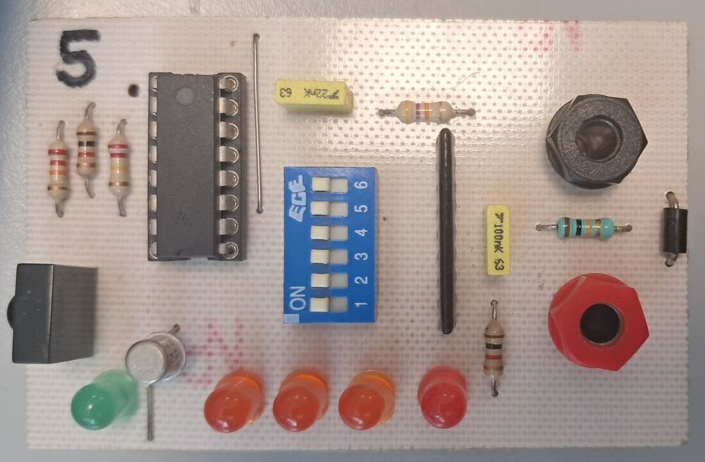
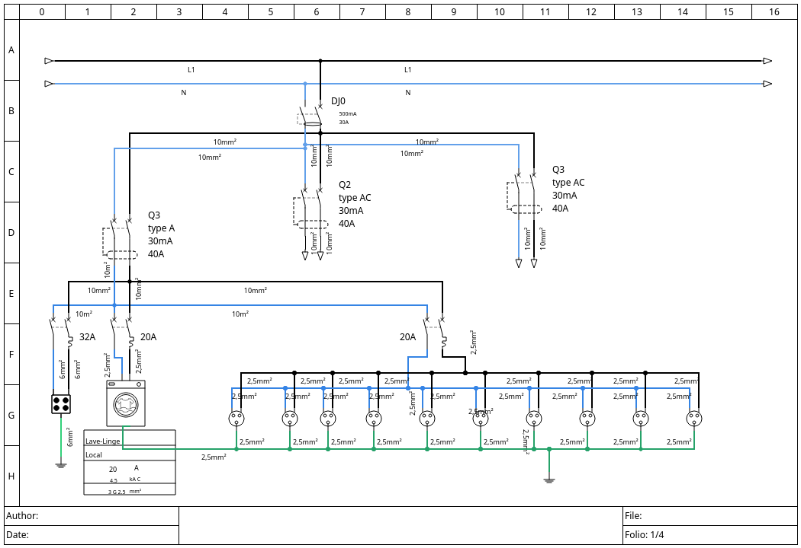

En GEII, nous travaillons beaucoup sur des projets qui sont orientés vers la conception, l'analyse et la réparation. Ainsi que des Travaux Dirigés et des TP. Voici dix projets sur lesquels j'ai travaillé.

Deux versions : une commande analogique, et une commande numérique sur carte Nucleo (STM32).

Montage selon le dossier de fabrication, test de continuité des pistes et des LED — premier projet de la formation.

Carte suivant une source lumineuse via un moteur pas à pas : analyse électronique, programmation puis présentation du fonctionnement.

Simulation d'une erreur de transmission et correction par code de Hamming, sur une carte Altera DE10-Lite.
Conception d'un montage de mesure autour d'une sonde PT100, sous KiCad.

Interface de commande de la vitesse, du sens de rotation et de la position d'arrêt, sous Control Expert.

Réalisé avec Youri Figuié : conception d'un circuit capable d'indiquer le niveau d'une batterie via trois LED de couleurs différentes, avec un seuil intermédiaire réglable par potentiomètre.

Analyse du fonctionnement d'une carte, puis réparation d'une carte défectueuse similaire.

Analyse et réparation directe d'une carte de transmission infra-rouge défectueuse.

Durant ce projet, j'ai dû analyser l'installation électrique de mon habitation afin d'en réaliser le schéma sous QElectrotech. J'ai aussi rédigé un rapport de cette analyse détaillant le respect des normes NFC 15-100.
En recherche d'une alternance dès l'automne 2027, et d'un stage de 2 à 3 mois à partir de mai 2027. N'hésitez pas à me contacter.
07 84 24 44 99